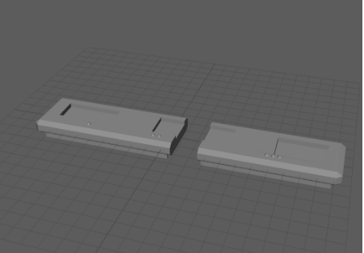

Most know that princesses are very popular for not only children but any age. Our goal with this fun and timeless game was to create something that would be able to bring people together to challenge themselves and their peers on their memory for fun moviesl. The main goal in mind was to test the minds of children with developing minds in order to see whether or not they would be able to use their memorys to piece together what quote matches to what corresponding object. We focused on trying to be inclusive and make the game challenging enough for older players while still being able to test the memory and identification skills of young children. After all this work we can confidently say that this is a game that can be enjoyed no matter how old you are and it's something that we're able to share with the world and disney princess fans.
The Creation
In the process of designing and executing this game, there was lots of trial and error. We started off this project by brainstorming possible ideas for this game. Once we landed on the idea of a guessing game we took the unanimously loved franchise and built our game around the easter eggs and iconic quotes/items that make these movies so loved, unique, and individual. Once we figured out the basics it was time to make concept sketches and begin 3D models! We went through a few potential designs for the base of our board but we ended up with a very clean board with little indents for cards.

After 3D printing our final model we worked on the design of the guessing cards which you can see when you play the game!